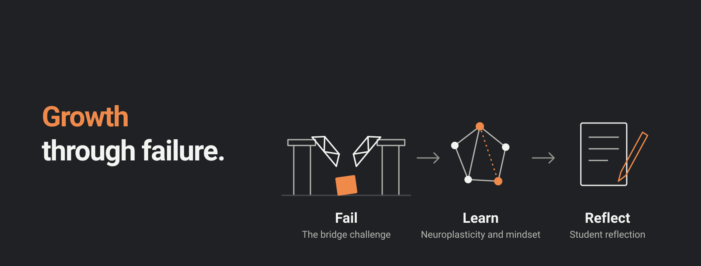

Background and experience
I am a STEM educator, engineering instructor, and technical professional with more than 10 years of experience in science and engineering education, curriculum development, and digital learning.
Background
My technical work covers parametric CAD modeling, additive manufacturing, laser fabrication, rapid prototyping, engineering documentation, and technical training.
On the instructional side, I develop self-paced digital learning environments, design engineering projects, create instructional materials, and build interactive educational simulations using AI-assisted coding tools.
My background also includes biochemistry, pharmaceutical research, higher education teaching, educational leadership, and nonprofit makerspace development.
Professional experience
-
Science Department Head and STEM Educator
Northeastern High School
I lead the science department for grades 6–12 and teach science and engineering.
-
Adjunct Physical Science Faculty
Indiana University East
I design and teach a hybrid physical science course for future elementary educators. Read the case study.
-
Graduate Science Teaching Methods Instructor
Earlham College · Former
I taught science teaching methods at the graduate level.
-
Biochemist
Eurofins Lancaster Laboratories at Eli Lilly · Former
I worked as a biochemist in pharmaceutical research and development.
Leadership
- Science Department Head, grades 6–12Leading a department of 6+ members.
- Founding Board MemberThe Hive Makerspace
- Chair, Programming CommitteeThe Hive Makerspace
Education
- Master of Arts in TeachingEarlham College
- Bachelor of Arts in BiochemistryEarlham College
- 18 graduate credit hours in Chemistry
Credentials
- Indiana teaching licensureChemistry, Life Science, and Technology Education
- CrossFit Level 3 Trainer
Teaching approach
A growth mindset is a key part of how I teach. I open my courses with a lesson on it, before any content, so that students expect to struggle, get feedback, and try again.

The bridge challenge
The course opens with an instant challenge: build a bridge between two tables that can support a weight. Materials are limited and time is short, so failure is likely.
Neuroplasticity
A lesson on how the brain changes as it learns.
Growth mindset
What a growth mindset is and why it matters for success, with examples of famous failures.
Reflection
Students reflect on how they can develop a growth mindset of their own.
Growth mindset posters around the classroom keep the theme in front of students all year. The same idea shapes my course design: in my self-paced chemistry course, a mastery check that comes back as "not yet" leads to feedback and another attempt. See how that works.